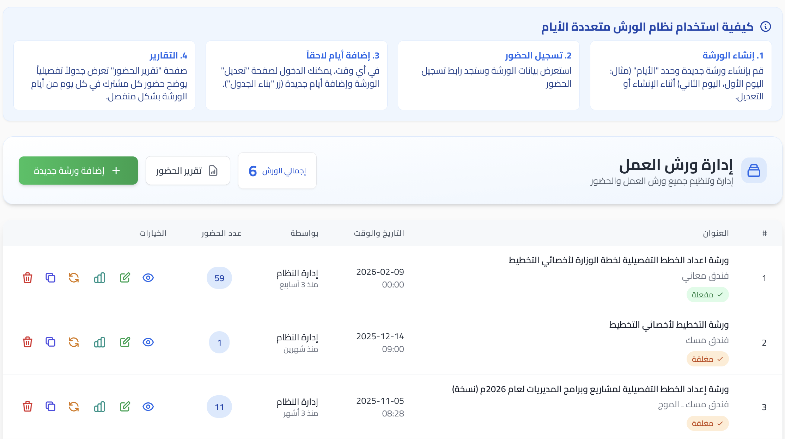
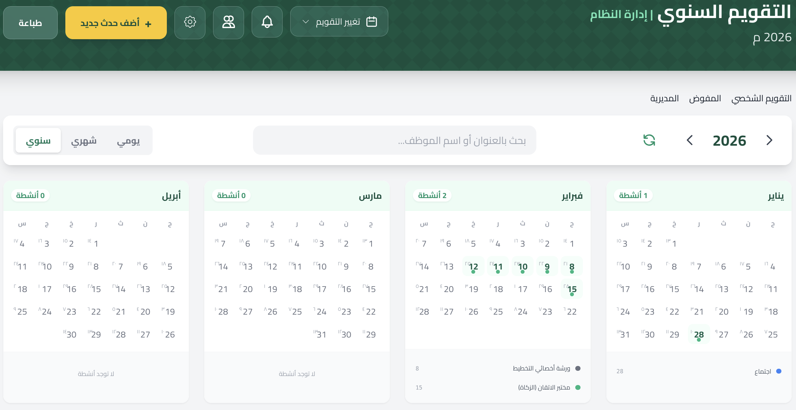
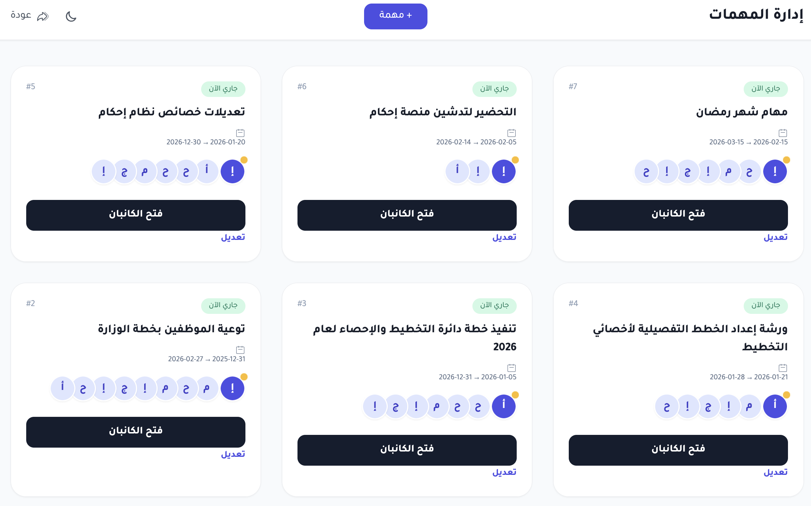
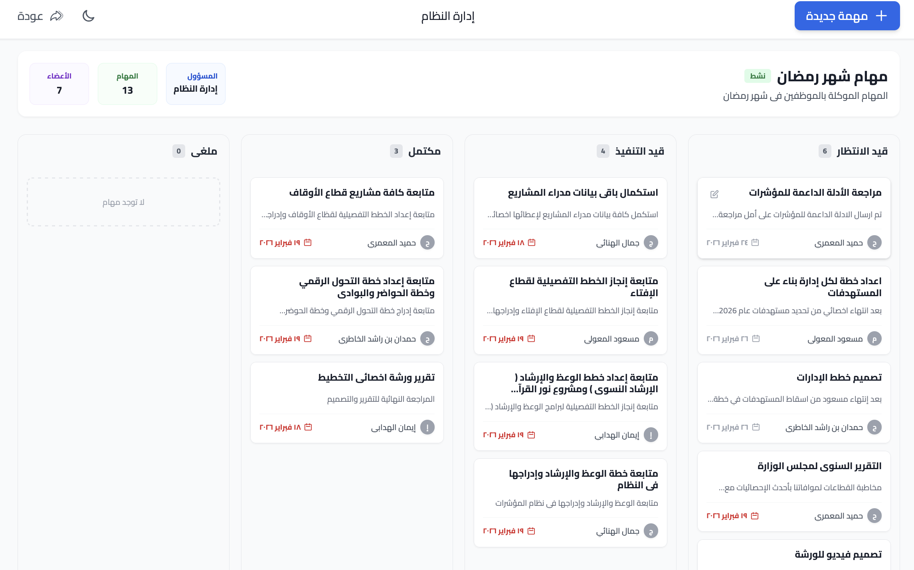
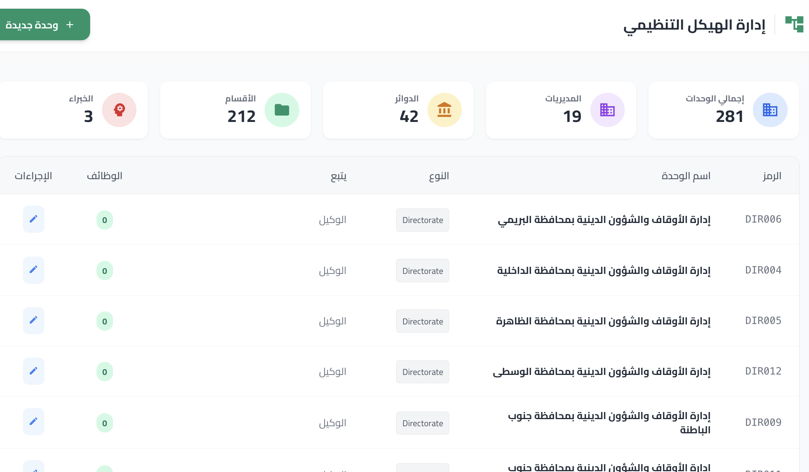
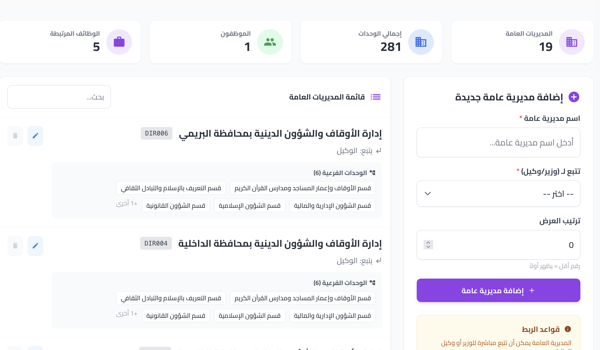

مؤشرات الوزارة والمشاريع والأنشطة
إدارة شاملة لمؤشرات الأداء الرئيسية (KPIs) المرتبطة بالوزارة، ومتابعة تنفيذ المشاريع والأنشطة وتقييمها. ويشمل ذلك احتساب التكلفة المالية والاحتياجات الخاصة بالمشاريع.


الورش التدريبية
إدارة متكاملة للورش التدريبية وما يتعلق بها من تسجيل الحضور، استبانة الرضا، وتوفير الأدوات الإلكترونية التفاعلية المستخدمة في تقديم الورشة مثل أدوات التحليل والتفاعل المباشر.

أدوات الورشة (التحليل الاستراتيجي)
مجموعة من أدوات التحليل الاستراتيجي المتقدمة التي تدعم الورش التدريبية وجلسات التخطيط، وتشمل: تحليل سوات (SWOT Analysis)، مخطط عظم السمكة (Fishbone Diagram)، وبطاقة الأداء المتوازن (Balanced Scorecard).


التقويم المؤسسي
تقويم تفاعلي مخصص لإدارة وعرض الجدول الزمني لأحداث وفعاليات الوزارة ومواعيد الاجتماعات والمهام المختلفة.

إدارة المهام (Missions)
أدوات متقدمة لتوزيع وإدارة المهام بين فرق العمل المختلفة، وتتبع التقدم في إنجازها عبر لوحات متابعة حالة المهام المخصصة (Kanban).


الإستبانات (Questionnaires)
بناء وتصميم الإستبانات المخصصة لجمع آراء المستفيدين أو تقييم الفعاليات، مع أدوات متقدمة لتحليل الردود.


الإحصائيات وصنع القرار
لوحات تحكم (Dashboards) وتقارير إحصائية دقيقة توفر رؤى عميقة لدعم متخذي القرار في تقييم الأداء العام وتحديد فرص التحسين.

الهيكل الإداري للوزارة
إدارة مرنة وعرض واضح للشجرة التنظيمية للوزارة بمديرياتها ودوائرها وأقسامها، مع توزيع الصلاحيات والأدوار للموظفين المسجلين في النظام.


التقنيات المستخدمة ومتطلبات التشغيل
التقنيات البرمجية
- Laravel (إطار عمل الواجهة الخلفية)
- Alpine.js (للواجهة الأمامية التفاعلية)
- Tailwind CSS (لتصميم واجهة المستخدم)
- MySQL (قاعدة البيانات)
خادم الاختبار (Testing Server)
- نظام التشغيل: Ubuntu (Latest)
- المعالج (CPU): 2 Core
- الذاكرة العشوائية (RAM): 4 GB
- التخزين (Storage): 50 GB
خادم الإنتاج (Production Server)
- نظام التشغيل: Ubuntu (Latest)
- المعالج (CPU): 8 Core
- الذاكرة العشوائية (RAM): 16 GB
- التخزين (Storage): 500 GB NVMe